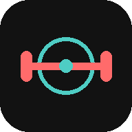

Benvenuto in Fit & Mind
Allenamento a corpo libero che si adatta a te, e meditazione per la cura interiore.
Scheda del Giorno
Livello 1/8
🔥 Streak 0
Preparazione della scheda in corso...
1. Riscaldamento & Mobilità
2. Core & Pancia
3. Circuito Cardio & Full Body
4. Defaticamento
Meditazione & Mind Care
Livello Mente 1/6
🔥 Streak 0
-- min
Come ti senti adesso? (facoltativo)
05:00
Seleziona l'obiettivo e premi avvia.
Profilo Fisico
Utente:-
Età:-
Altezza:-
Peso Attuale:-
🧠 Stato Psicofisico Attuale
Stato d'Animo:-
Qualità Sonno:-
Livello Energia:-
💪 Storico & Progressione Fisica
Livello allenamento:1 / 8
Allenamenti completati:0
Ultimo Feedback:-
Streak "cura di te":0 giorni 🔥
🧘 Andamento Interiore
Livello Mente:1 / 6
Meditazioni completate:0
Fai una sessione di meditazione con check-in umore per iniziare a vedere il tuo andamento.